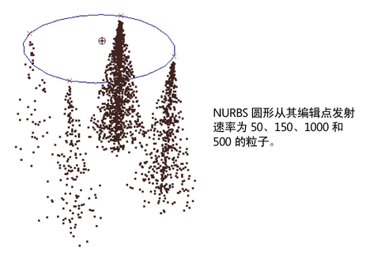
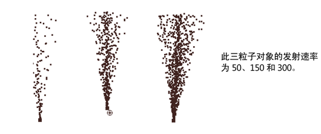

您可以为每个粒子、CV、顶点、编辑点，或泛向/定向粒子发射器的晶格点使用不同的发射速率例如，可以从圆形的编辑点发射火的边，并改变每个点的发射，以增强自然火中的不规则。不能改变基于“发射器类型”是“曲面”或“曲线”的对象逐点的发射。


提示： 如果粒子对象发射，则可以使用表达式或 MEL 命令来获取发射粒子的所有粒子的 id。您可以使用 id 查询发射对象的属性值，例如，加速度、速度和随机数流。要执行此操作，必须将 parentId 属性添加到发射的粒子形状节点。如果使用 MEL 发射命令创建发射粒子，则这些发射的粒子的 parentId 属性始终为 0
从粒子更改发射
- 创建并选择发射粒子对象。
- 选择。
这将为发射的粒子对象创建名为“emitterRatePP”的属性。此属性用于改变基于每个粒子的发射速率。
- 在“属性编辑器”(Attribute Editor)中，打开“每粒子(数组)属性”(Per Particle (Array)Attributes)区域。
- 无需断开“emitterNameRatePP”，右键单击“emitterNameRatePP”框并选择设置其值所需的方法。请参见使用每粒子属性。
请注意，您可以启用或禁用发射器的“使用逐点速率”(Use Per-Point Rate)属性来切换逐点发射速率。在“大纲视图”(Outliner)中，发射器将在发射对象下缩进。
从 NURBS 或多边形点发射器改变发射
- 添加点发射器后，完成建模几何体。
- 选择发射的几何体。
- 选择。
- 选择发射对象的形状节点。
- 在“属性编辑器”(Attribute Editor)的“附加属性”(Extra Attributes)区域，打开“emitterName 速率 PP”部分。
对于“emitterNameRatePP”属性，请在与 CV、顶点、编辑点或晶格点对应的“属性编辑器”(Attribute Editor)框中输入值。要了解哪些框对应于一点，请尝试使用框中较大的值。也可以使用表达式、渐变或 Artisan 设置单个速率。
注： 如果添加和调整逐点发射速率后添加 CV、顶点或编辑点，则可以选择第二次
“逐点发射速率”(Per-Point Emission Rates)，以设置“emitterNameRatePP”的其他条目。但是，该“属性编辑器 emitterNameRatePP”条目不再与 CV、顶点或编辑点的相同标识符对应。您将需要校正“emitterNameRatePP”条目。
如果删除 CV、顶点或编辑点，则删除发射器，创建新的发射器，并选择“逐点发射速率”(Per-Point Emission Rates)。